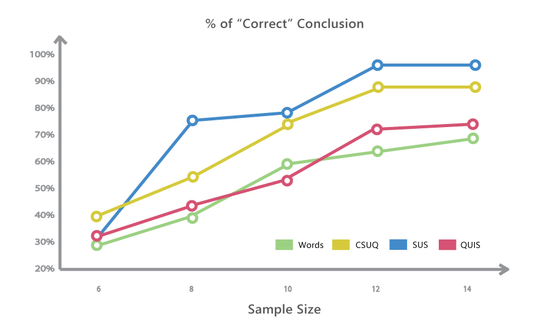

Introduction
Survey is a universal and simple way of collecting huge amount of data in relatively short amount of time. However, according to my experience, conducting an effective survey is sometimes even more difficult than using other methodologies. Researchers have to pay attention to every single word they use, the structure of the survey, the order of the questions and lots of other details.
Recently I have been reading research papers about standardized questionnaires and a book called quantifying user experience. Below is a summary of my findings and what I learned.
Advantage of applying standardized survey design
- Objectivity
- Replicability
- Quantification
- Economy
- Communication
- Scientific generalization
SUS
- Fee:0 USD
- 10 questions
- Five point scale (Strongly disagree to strongly agree
- Handy benchmarks
- 12 samples do well on representing the whole data set
- Global Reliability= 0.92
QUIS
- Fee: 50-750 USD
- 28 questions
- Ten point scale (Terrible to Wonderful)
- Global Reliability= 0.94
CSUQ (A variant of PSSUQ)
- Fee: 0 USD
- 19 Questions
- Seven point scale(Strongly agree to disagree)
- 12 samples can represent about 90% datasets
- Global Reliability= 0.94

Takeaway
There are couple factors, which need to pay attention to before making decision between survey methodologies.
- Potential Response Rate/ Sample Size
- Budget
- Degree of detail that you wish to learn from the result
- Benchmark is required or not
- Type of product
- Expectation to the survey result
Reference
- 1. Thomas S. Tullis and Jacqueline N. Stetson (2004). A Comparison of Questionnaires for Assessing Website Usability. Retrieved from http://home.comcast.net/~tomtullis/publications/UPA2004TullisStetson.pdf
- 2. Sauro, J., & Lewis, J. R. (2012). Quantifying the user experience: Practical statistics for user research. Amsterdam: Elsevier/Morgan Kaufmann.